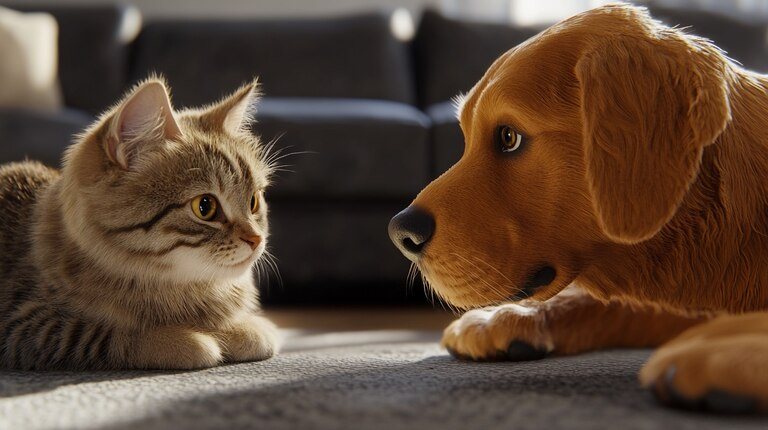
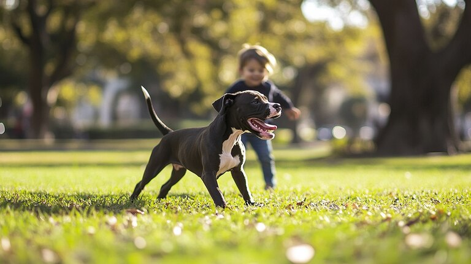
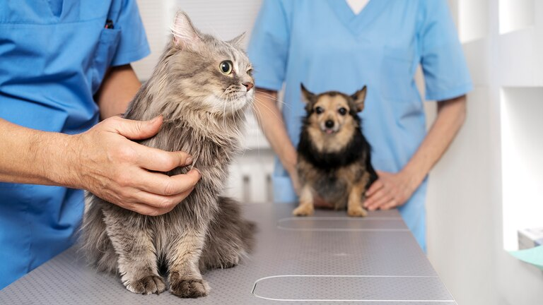
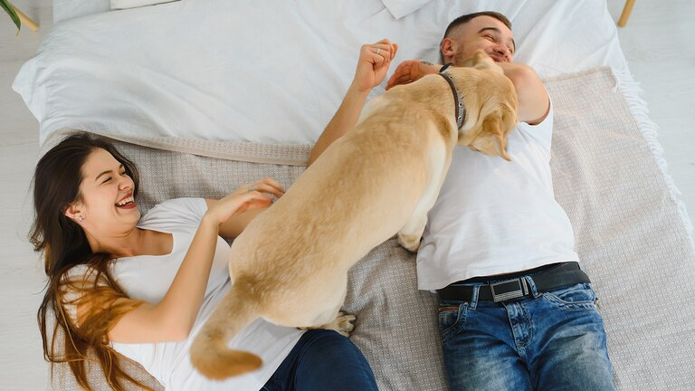

¿Perros o gatos? Claves para elegir el tipo de mascota ideal
Antes de incorporar un animal de compañía al hogar, deben considerarse varios aspectos, además del gusto personal. En su efeméride, especialistas dieron detalles sobre la evaluación consciente que implica sumar a un nuevo integrante a la familia

Antes de sumar un animal de compañía al hogar, hay factores fundamentales que deben evaluarse más allá del gusto personal por un perro o un gato.
En el Día del Animal, especialistas consultados por Find My Pet, remarcaron que la elección de una mascota implica compromiso de tiempo, dinero, y responsabilidad tanto sanitaria como emocional.
“Cada persona tiene su predisposición personal con respecto a un perro o a un gato”, comenzó a explicar el médico veterinario y etólogo Omar Robotti (MP 1309), quien es profesor titular de Etología clínica y Ética y Deontología en la Universidad Católica de Córdoba. Pero aclaró que “no se puede elegir un animal por un gusto o por una moda”.
Con él coincidió Marcelo Zysman, diplomado en medicina veterinaria, certificado en analgesia y anestesia (MP 7483) para quien “la idea de tener un perro o un gato parte esencialmente de poder cumplir con la variable de casa, comida, cariño”, donde el cuidado de la salud ocupa un rol primordial.
Qué cuidados necesita un gato Los gatos son animales de compañía que, si bien son más independientes, también requieren atención y preparación del espacio donde vivirán. Robotti señaló que “hay que tener en cuenta si va a estar en un departamento o en una casa. Si es en un lugar cerrado, se debe adecuar ese ambiente para que el gato despliegue sus habilidades, sus instintos, de trepar, de cazar un juguete”.

Además, advirtió sobre los riesgos si los gatos acceden al exterior: “El gato es el principal depredador de la fauna urbana, caza pájaros. También puede contagiarse de enfermedades, y algunas pueden ser zoonosis hacia los humanos”. Por ello, recomienda “asegurar el patio para que el gato no salga, y vagabundee”.
Desde su mirada, Zysman subrayó que “el gato disfruta de la posibilidad de adaptarse a condiciones de individualismo y poco espacio”, siempre y cuando “se le aporten los cuidados que abarcan las generalidades de la ley”, en referencia a generar un entorno seguro y enriquecedor.
Qué cuidados necesita un perro Tener un perro implica comprometerse a una rutina diaria de paseos y recreación. “Necesita una rutina. Si estamos en un departamento, necesita paseos sanitarios y recreativos. Y si está en una casa, también necesita paseos”, explicó Robotti. Además, insistió en que “hay que dedicarle tiempo para el juego y para la educación”.

Zysman reforzó esta idea y remarcó que “los perros necesitan salir, esparcirse, oler, ladrar, y que les ladren. No se puede pensar la idea de un perro como la de un ser prisionero”. Según él, los animales que permanecen encerrados “cambian drásticamente su comportamiento, se hacen muy posesivos, y algunos incluso agresivos”.
En cuanto al aspecto económico, Robotti señaló que “hay que darle una buena alimentación, llevarlo al veterinario, vacunarlo”, mientras Zysman agregó que “la inversión de dinero que hay que hacer, por ejemplo, para alimentar a un perro pequeño es menor en condiciones normales que en un perro grande”.
Qué considerar a la hora de elegir entre un perro o un gato Ambos especialistas subrayaron que la elección debe contemplar la inversión de tiempo, espacio y dinero. “Tengamos en cuenta todas esas necesidades que necesita el animal en cuanto a dedicación de tiempo, espacios y economía”, recalcó Robotti.

Para Zysman, también es esencial romper con ciertos prejuicios: “No existen razas asesinas ni razas ideales para chicos. Son condiciones de individuos. Por eso es tan importante antes de llevar a casa el tipo de perro que a cada uno le gustaría, charlar con un profesional”.
La consulta previa al veterinario es un consejo que ambos especialistas remarcaron. “Antes de llevar un gato a casa, también hay que ir a conversar con el veterinario”, destacó Zysman, y aclaró que esta conversación “se hace antes, no después. Después hay que remediar; antes es una inversión”.
¿Qué es más compañero: un perro o un gato? Según Zysman, el perro, por su naturaleza social, tiende a ser más expresivo en el vínculo diario: “Sin duda, en su código de comunicación social, va a transmitir mucho más que un gato, cuando su tutor llegue a su casa, va a poder interactuar más”. Sin embargo, aclaró que los felinos también “aportan beneficios que no dependen tanto de tu tiempo”.

Robotti, por su parte, sugirió que la relación humano-animal depende en gran parte de una educación adecuada: “La educación de esos perros o gatos es fundamental para que después, a futuro, tengamos una relación humano-animal más armónica”.
¿Es más fácil educar a un perro o a un gato? Ambos veterinarios coincidieron en que educar a un animal es posible, siempre que haya dedicación. “Todos los animales son fáciles de educar, si se está dispuesto a educarlos”, afirmó Zysman. Y Robotti reforzó que “la educación es fundamental” para garantizar una convivencia armoniosa.

El compromiso de tiempo para la educación y la interacción diaria es esencial. “Si alguien no tiene tiempo para dedicarle ni mucho espacio, se impone el gato en la elección”, concluyó Zysman, y volvió a advertir que no es simplemente una cuestión de facilidad, sino de adaptar la elección a la realidad de cada hogar.
← Volver a Noticias